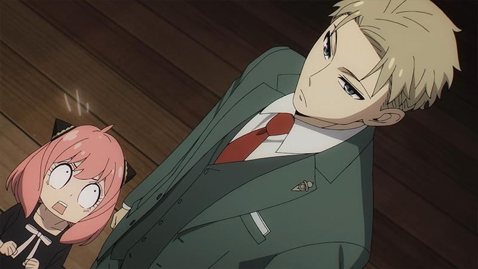

Reseña | SPY x FAMILY – Capítulo 2
Mission:02 Objetivo: Conseguir esposa
SPY x FAMILY capítulo dos da inicio con el rechazo total a que Franky ocupe el papel de madre. Por otro lado, conocemos a Yor, una empleada gubernamental que no tiene la mejor relación con sus colegas. Ella tiene sus propias preocupaciones y es que posee un trabajo del que nadie sabe nada, ella es una asesina. El destino lleva al encuentro entre Yor, Loid y Anya, quienes por sus propias circunstancias deciden cooperar para ayudarse mutuamente. Loid planea acudir a una fiesta donde fingirá ser su novio para después ella finja ser la madre de Anya para su ingreso a la escuela. Debido a la falta de empleados, Loid tiene que trabajar la noche de la fiesta por lo que Yor acude sola, sin embargo, Loid consigue llegar y la apoya frente a sus colegas. Posteriormente, cuando se van son perseguidos por los enemigos que enfrento antes Loid, pero se deshacen de ellos y se comprometen a mantener su falsa relación mientras la misión/asesinatos lo requieran.
Un objetivo en común
Seguimos avanzando en esta misión para conservar la paz, y lo siguiente que una familia necesita es una madre. La escuela Edén no es cualquier escuela, sus requisitos pueden ser muy específicos e incluso conservadores, así que no es extraño que una figura materna sea absolutamente indispensable. Claro que esto es solo una piedra en el camino para nuestro querido Twilight, acostumbrado a trabajar en solitario. En fin, sin más remedio, le toco buscar a una mujer que pueda ser la candidata ideal. Y para esta misión casi imposible, apareció Yor, una mujer con un historial limpio, soltera y que no tiene inconveniente con que él sea padre de una niña. Sin duda es la candidata ideal, lo es sobre todo para Anya que al descubrir su verdadera profesión no pudo evitar emocionarse más.
Por su parte Yor estaba ante una encrucijada, pues pese a sus esfuerzos no puede ser del todo normal. Lo que la ha llevado a estar algo alejada de sus colegas y por ende la pone en una situación de peligro de ser sospechosa de espionaje. Debido a su edad todos consideran extraño que no tenga pareja, aunque no del todo porque ella por sí misma es extraña. La situación de Yor es simple, ella quiere demostrar una normalidad que no entiende del todo, por ello las palabras de sus colegas le afectaron ara intentar buscar pareja. Sumado a ello está el hecho de que no desea preocupar a su hermano por lo que cree que si tuviera una pareja las preocupaciones de su hermano desaparecería.
Es así que ambas situaciones se alinearon para hacer de Loid y Yor la pareja ideal para esta misión. Pues ninguno se entrometería con el otro más de lo necesario, ayudarían a sus intereses y siendo justos la falta de sentido común de ambos coincide bastante bien.
Asesina x Espía
Si bien el foco de la misión sigue siendo formar una familia para infiltrarse en la escuela Edén, este episodio nos brinda un primer vistazo a Yor. Ella es una asesina de profesión, y por ello posee un carácter muy peculiar. Además del hecho de pensar constantemente en el asesinato, ella tiene una imagen poco clara de lo que es la normalidad. Aunque entiende que su hermano desea algo como eso para ella, formar una familia y ser feliz, en el fondo sabe que no puede hacerlo. Todos sus años de formación como asesina están siempre en el medio. También está el hecho de que su carácter la ha puesto en el lado malo de sus colegas por lo que no suele recibir muestras de amabilidad a menudo.
Su encuentro con Loid es un cambio total a su ritmo. No solo por la ayuda que se ofrecen sino porque genuinamente ella lo reconoce como alguien amable y digno de confianza. Él se vuelve una luz en la obscuridad, pues no solo podrá despejar dudas sobre su identidad, sino que él y su hija Anya podrían ser esa bocanada de normalidad que tanto le rehúye. Lo que es un hecho es que tanto Loid como Yor son una pareja muy complementaria entre sí. No solo por tratarse de un espía y una asesina, sino por la naturaleza oculta de su trabajo ambos encajan en lo físico y en lo mental. Loid es muy inteligente y capaz, mientras que Yor se muestra más inocente y bobalicona. Aun con ello ambos se dejan llevar por un sentido común fuera de lo común, típico para sus oficios. No cabe duda que la mejor pareja ha nacido.
.jpg)
Comentario final
SPY x FAMILY capítulo dos ha sido un episodio divertido y reflexivo, lo mejor de todo fue finalmente conocer a Yor y tener el retrato familiar completo. El capítulo ha seguido el ritmo del anterior, dejándonos llevar un ritmo suave y acompasado entre comedia, acción e incluso añade su propio drama. No basta con conocer la profesión superficialmente, eso es lo que nos indica este episodio. Yor no es una simple asesina, detrás de ella hay entrenamiento y una razón para ese oficio. Mantener una fachada tampoco es sencillo, menos aun cuando eres tan fin a tu profesión que los pensamientos sobre esta te persiguen constantemente. Desde ya podemos ver que Yor es una adición de oro para esta peculiar familia de espía y esper.
Antes de cerrar esta reseña hablemos del opening que finalmente hizo su debut en este segundo episodio. Empezando por la música, “Mixed Nuts” de Official HIGE DANdism, es una canción increíblemente pegajosa, es alegre y con ritmo. El apartado visual es un deleite, con un estilo caricaturesco a los 60’s, con el contraste del arte moderno para el cambio de ritmo. Sin duda fue una elección muy acertada. Soy todo alago para el opening, me encanto y no puedo negarlo. Además de que soy cada vez más fan de la comedia de la serie, especial atención a las expresiones de Anya que son lo máximo.
Hasta aquí la reseña, les dejo las preguntas de costumbre: ¿Qué les ha parecido este capítulo? ¿Cuál es su opinión de Yor tras su debut? ¿además de una asesina, que otra profesión pudo haber encajado con esta peculiar familia? ¿creen que estarán preparados para su debut como familia ante la escuela en el tiempo que es queda?